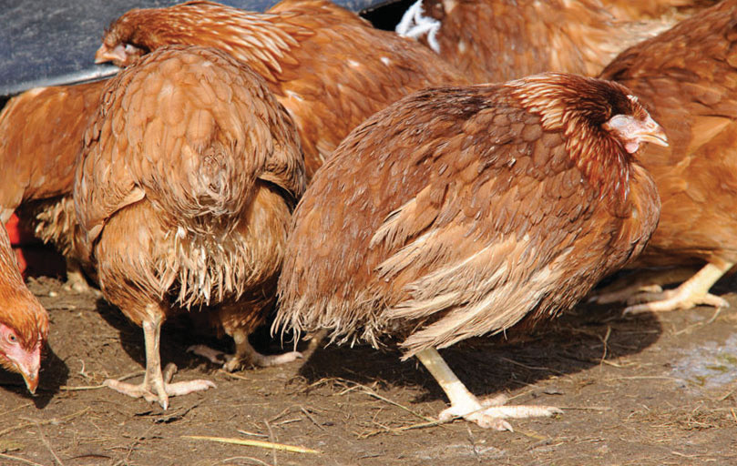
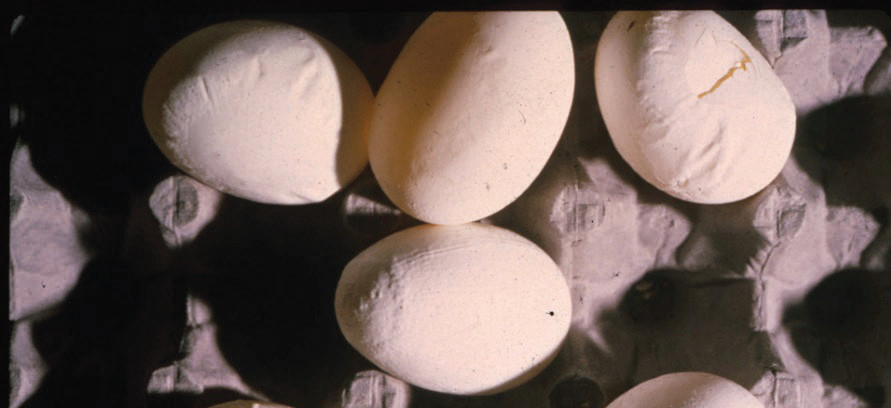
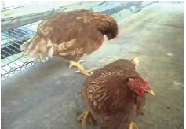
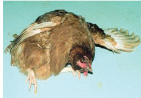
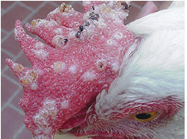
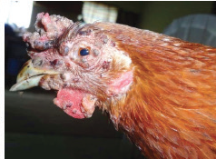

Figures 10.14 (a) to (d) show some disease symptoms in chickens.






It is important to note the following:
(a) Parasites and diseases can cause problems for chickens, for example, discomfort, blood loss, and even death. To prevent this, we must keep the chicken’s environment clean and use appropriate treatments recommended by a veterinarian.